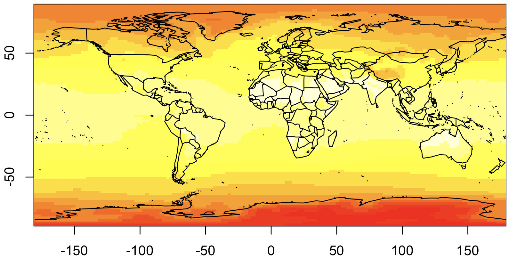

Weighting schemes¶
Key objectives and decision points
Objectives:
Understand how to incorporate weights into your data.
Understand how to match up gridded data with different grids.
Decision points:
Does your data-generating process occur locally or regionally?
Select the weighting scheme most appropriate for your data.
This section describes how to use different weighting schemes when working with gridded and regional data. As we use the term, weighting schemes assign a weight to each grid cell or regional observation. They have two major uses: (1) when running regressions, to weight observations to accurately estimate processes, or (2) to perform a weighted aggregation of gridded data to data regions.
Why spatial weighting schemes matter¶
Taking the unweighted average of weather within a region can misrepresent what populations, firms, or other phenomena of interest are exposed to. For example, an unweighted annual average temperature for Canada is about -8°C, but most of the population and agricultural activity is in climate zones with mean temperatures over 6°C, and the urban heat island effect can raise temperatures by another 4°C. The time of year matters too, and you should consider a weighting scheme across days within a year, or even hours within a day.
As described in section spatial and temporal scales of economic processes, the scale of a phenomenon matters. Many processes occur at a more local scale than that which data is collected. The motivation for weighting is different for aggregation that represents averaged phenomena vs. phenomena that respond to averaged weather, and the sequence of analysis changes accordingly.
When the phenomenon occurs locally, in response to local weather, we perform weighted aggregations to reflect the amount of the phenomenon in each location. For example, we would use population weighting to model the effects of heat on people. In this case, the order of operations is:
Transform weather into the terms of the model specification.
Average these transformed terms across space using a weighting scheme.
When the phenomenon occurs at a data region level, in response to averaged weather, the weighting scheme reflects the relative importance of weather in different regions to the whole. For example, weighting rainfall by the distance from ashore could be important to predict the declaration of states of emergency. The order of operations is:
Average the weather across space using a weighting scheme.
Transform the averaged weather to the model specification.
In either case, the weighting scheme is the same:
where \(w_p\) is the weight for pixel \(p\), and \(P(i)\) is the set of pixels in data region \(i\).
Where to get spatial weighting data¶
Below are some common data sources for various weighting schemes.
üìö Population is an important weighting scheme for social impacts.
Gridded Population of the World : Open-source, available at 30 arc-second resolution every 5 years from 2000 (or before with their previous version).
LandScan : LandScan is available at 30 arc-second resolution, annually, but previous years need to be purchased. Ask at your institution, as many already have it.
üìö Gridded agriculture information
üìö Look at the IRI Data Library for a large variety of datasets, available in any format.
Working with gridded weighting data¶
Weighting data files come in a wide range of file formats, since any gridded data file can be used as a weighting scheme. The most common data types are CSV, ASC, GeoTIFF, and BIL files. In each case, you (or your code) need to know (1) the format of the data values, (2) the spatial gridding scheme, (3) the projection, and (4) how missing data is handled. These are described in the sections below.
The format of the data values¶
Data values can be written out in text (as with CSV and ASC files) or in a binary representation (GeoTIFF and BIL). If the values are written as text, delimiters will be used to separate them (comma for CSV, spaces for ASC).
The spatial gridding scheme¶
The spatial gridding scheme is determined by 6 numbers: a latitude and longitude of an origin point, a horizontal and vertical cell lengths, and a number of rows and columns. - The most common origin point is the location of the lower-left corner of the lower-left grid cell. For example, for a global dataset, that might be 90°S, 180°W, which is represented in x, y coordinates as (-180, -90). Sometimes (particularly with NetCDF files), grid cell center locations will be used instead. - Grid cell sizes are often given as decimal representation of fractions of a degree, such as \(0.0083333333333 = 1 / 120\) of a degree. This is the grid cell size needed globally to ensure a km-scale resolution. Usually the horizontal and vertical grid cell lengths are the same, and reported as a single number. - The number of grid cells is the most common way to describe the spatial coverage of the dataset. A global dataset will have 180 / cellsize rows and 360 / cellsize columns.
Based on this information, you can calculate which grid cell any point on the globe falls into:
where \(x_0, y_0\) is lower-left corner point. If the center of the lower-left cell was given, \(x_0 = x_\text{llcenter} - \frac{\text{CellSize}}{2}\), \(y_0 = y_\text{llcenter} - \frac{\text{CellSize}}{2}\).
For CSV files, you will need to keep track of this data yourself. ASC files have it at the top of the file, BIL files have a corresponding HDR file with the data, and GeoTIFF files have it embedded in the file which you can read with various software tools.
The geographic projection¶
Projections are a way to map points on the globe (in
latitude-longitude space) to a point in a flat x, y space. While this
is important for visualizing maps, it can just be a nuisance for
gridded datasets. The most common “projection” for gridded datasets is
an equirectangular projection, and we have been assuming this
above. This is variously referred to as 1, ll, WGS 84, and
EPSG: 4326 (technically, WGS 84 species how latitude and longitude
are defined, and EPSG:4326 specifies a drawing scheme where x =
longitude and y = latitude). However, you will sometimes encounter
grids in terms of km north and km east of a point, and then you may
need to project these back to latitude-longitude and regrid them.
Handling of missing data¶
All of these allow missing data to be handled. Typically, a specific numerical representation, like -9999, will be used. This is specified the same way that the gridding scheme is.
Implementation Notes: Reading gridded data.¶
Use the raster library. For example:
library(raster)
rr <- raster(filename)
See also
If you are using R, take a look at the Introduction to Geospatial Raster and Vector Data with R, which has some extensive examples of working with geospatial raster data.
In some cases, it is appropriate and possible to use time-varying weighting schemes. For example, if population impacts are being studied, and the scale of the model is individuals, annual estimate of population can be used. This kind of data is often either in NetCDF format (see above), or as a collection of files.
Aligning weather and weighting grids¶
The first step to using a gridded weighting dataset is to make it conform to data grid definition used by your weather data. This generally requires resampling the weighting data, increasing its resolution by some factor. You want to do this so that two conditions to be met after resampling: (A) The new resolution should be an integer multiple of the weather resolution. (B) The horizontal and vertical grid lines of the weather data coincide with the resampled grid lines of the weighting data.
Here we assume that both are regular latitude-longitude grids. See working with gridded weighting data to understand the grid scheme for your weighting file; note that gridded weather data often reports the center of each grid cell, rather than the corner.
If your datasets cover the same geographic extent, and if the resolution of your weighting dataset is an even multiple of the resolution of your weather dataset, your job is easy. Just either aggregate or disaggregate grid cells so that they have the same resolution as the weather data, using the code below. In other cases, you will need to follow three steps, and generally require upsampling, downsampling, and cropping.
Upsampling - increasing data resolution¶
To increase the resolution of a grid rr by a factor of N without increasing the
sum of grid cells:
rr2 <- disaggregate(rr, fact=N) / (N^2)
rr2 = np.repeat(np.repeat(rr, N, axis=0), N, axis=1) / (N*N)
Downsampling - decreasing data resolution¶
To decrease the resolution of a grid rr by a factor of N without
decreasing the sum of grid cells:
rr2 <- aggregate(rr, fact=N, fun=sum)
rr2 = np.zeros((int(rr.shape[0] / N), int(rr.shape[1] / N)))
for ii in range(N):
for jj in range(N):
rr2 += rr[ii::N, ii::N] / (N*N)
Cropping - adjusting the extent of data¶
To adjust the spatial extent of grid rr to conform as closely as possible
to a box from the longitudinal range WW to EE and the latitudinal
range from SS to NN.
rr2 <- crop(rr, extent(WW, SS, EE, NN))
# We need to know the original extent of the data (W0, S0, E0, N0) and the spatial resolution (D)
rr2 = rr[int((SS - S0)/D):int((NN - S0)/D), int((WW - W0)/D):int((EE - W0)/D)]
The following recipe should work for most cases to align weighting data with a weather grid.
Upsample the weighting data until the grid of the weighting data evenly divides up the weather data. Start by considering the southwest corner of each dataset. Even if the datasets are of the same resolution, upsampling may be required to make the grid cells line up. For example, if the weighting data has a southwest corner of (0 N, 0 E) and a resolution of \(1\) degree, while the weather data starts at (0.5 N, 0.5 E) and a resolution of \(1\) degree, the weighting data will need to be upsampled by a factor of \(2\), so that it provides a grid line at (0.5 N, 0.5 E).
Clip the two datasets so that they line up. After step 1, it should be possible to clip the two datasets to the exact same extent.
Re-aggregate the weighting data. Now, downsample the weighting data to the resolution of the weather data.
Example¶
Suppose the weather data is nearly global, from 180°W to 180°E, 90°S to 86°N, as the case with LandScan population data. The resolution is 1/120th of a degree. You want to use this to weight PRISM data for the USA, with an extent \(125.0208\) to 66.47917°W, 24.0625 to 49.9375°N, with a resolution of 1/24th of a degree.
landscan <- raster("…/w001001.adf")
landscan
## class : RasterLayer
## dimensions : 21120, 43200, 912384000 (nrow, ncol, ncell)
## resolution : 0.008333333, 0.008333333 (x, y)
## extent : -180, 180, -90, 86 (xmin, xmax, ymin, ymax)
prism <- raster("PRISM_tmax_stable_4kmM2_2000_all_asc")
prism
## class : RasterLayer
## dimensions : 621, 1405, 872505 (nrow, ncol, ncell)
## resolution : 0.04166667, 0.04166667 (x, y)
## extent : -125.0208, -66.47917, 24.0625, 49.9375 (xmin, xmax, ymin, ymax)
Start by throwing away extraneous data, by cropping the LandScan to, say, 126 to 66°W, 24 to 50°N.
landscan <- crop(landscan, extent(-126, -66, 24, 50))
Now, note that the edge of the PRISM data is in the middle of the LandScan grid cells: \(120 * (180 - 125.0208) = 6597.5\) That means that you need to increase the resolution of the LandScan data by 2 to line it up. In general, you will need to increase it by 1 / (the trailing decimal).
landscan <- disaggregate(landscan, fact=2) / 4
We divide by 4 so that the total population remains the same.
After increasing the resolution of the LandScan data, we clip it again.
landscan <- crop(landscan, extent(-125.0208, -66.47917, 24.0625, 49.9375))
Now, the resolution of the dataset has become 1/240th, and we can write aggregate by a factor of \(10\) for it to match the PRISM data:
landscan <- aggregate(landscan, fact=10, fun=sum)
Plotting your results¶
Now take a moment to visualize the data that you have created. This is a good way to make sure you haven’t made any mistakes and to wow your less climate-adept colleagues in presentations.
To get an initial view of your data, you can just plot your data as a
matrix. In R, use the image function; similar functions exist in
other languages. The trick is to make sure that you specify the
coordinates when you plot the map.
Here’s an easy case, using population data from the Gridded Population of the World dataset.
library(raster)
## Load the data
rr <-
raster("gpw_v4_population_density_adjusted_to_2015_unwpp_country_totals_rev11_2020_2pt5_min.asc")
## Display it!
image(rr)
But that wasn’t any fun. Let’s try again with something more complicated.
First, we’ll download historical maximum temperature data from the easy-to-use IRI data library.
library(ncdf4)
## Load the data
nc <- nc_open("data.nc")
temp <- ncvar_get(nc, 'temp')
## Display it!
image(temp)
This is R’s default way of showing matrices, with axes that go from
0 - 1. What’s worse, the map is up-side-down, though it will take some
staring to convince yourself ot this. The reason is that NetCDFs
usually have the upper-left corner representing the extreme
North-West. But R’s image command shows the upper-left corner in the
lower-left.
We are also going to plot the countries, so this is easier to interpret. And to do that, we need to rearrange the data so it goes from -180 to 180, rather than 0 to 360 as currently. Here’s our second attempt:
## Extract the coordinate values
lon <- ncvar_get(nc, "X")
lat <- ncvar_get(nc, "Y")
## Rearrange longitude to go from -180 to 180
lon2 <- c(lon[lon >= 180] - 360, lon[lon < 180])
temp2 <- rbind(temp[lon >= 180,], temp[lon < 180,])
## Display it, with map!
library(maps)
image(lon2, rev(lat), temp2[,ncol(temp2):1])
map("world", add=T)

Now, for our production-ready map, we’re going to switch to
ggplot2. In ggplot, all data needs to be as dataframes, so we need
to convert the matrix into a dataframe (with melt) and the map into
a dataframe (with map_data):
## Convert temp2 to a dataframe
library(reshape2)
rownames(temp2) <- lon2
colnames(temp2) <- lat
temp3 <- melt(temp2, varnames=c('lon', 'lat'))
## Convert world map to a dataframe
library(ggmap)
world <- map_data("world")
## Plot everything
ggplot() +
geom_raster(data=temp3, aes(x=lon, y=lat, fill=value)) +
geom_polygon(data=world, aes(x=long, y=lat, group=group), colour='black', fill=NA)
And now we’re ready to production-ready graph! The biggest change will be the addition of a map projection. As mentioned above, map projections translate points on a globe into points on a screen. You’ll want to choose your projection carefully, since people are bound to judge you for it.
See also
Choosing a map projection is beyond the scope of this tutorial, however, you can take a look at this overview from Jochen Albrecht or how Randall Munroe thinks about them.

Using the projection, we can now make the final version of this
figure. Note that you will need to use geom_tile rather than
geom_raster when plotting grids over projections, and this can be
quite a bit slower. We use a color palette from
ColorBrewer, which is an excellent resource for
choosing colors.
library(RColorBrewer)
ggplot() +
geom_tile(data=temp3, aes(x=lon, y=lat, fill=value - 273.15)) +
geom_polygon(data=world, aes(x=long, y=lat, group=group), colour='black', fill=NA, lwd=.2) +
coord_map(projection="mollweide", ylim=c(-65, 65)) + xlim(-180, 180) +
theme_light() + theme(panel.ontop=TRUE, panel.background=element_blank()) +
xlab(NULL) + ylab(NULL) +
scale_fill_distiller(name="Average\nMax T.", palette="YlOrRd", direction=1) +
theme(legend.justification=c(0,0), legend.position=c(.01,.01))